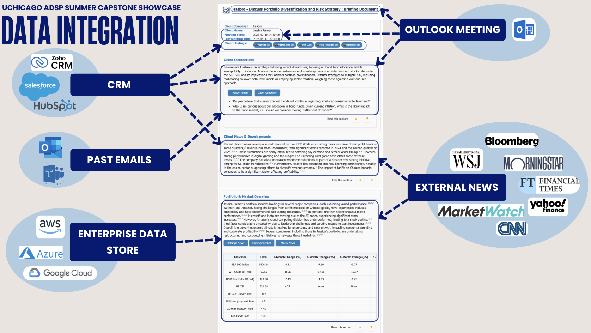

Project Summary:
CurrenSee is an agentic AI assistant that automates meeting prep for financial professionals, synthesizing critical data into actionable insights. It turns information overload into a competitive advantage, empowering firms to save millions and advisors to deepen client relationships, all through a single, streamlined Outlook extension. At a high level, Currensee integrates internal & external data sources via a multi-agent system, which summarizes the most relevant information in accordance with the user’s focus and preferences. Security guardrails ensure the report is accurate and uncorrupted before it is delivered in an interactive interface to the user. This then allows Currensee to capture the user’s interactions with the report to learn their unique preferences.

Motivation:
In the fast-paced world of financial advisory services, information overload threatens the quality of client relationships. CurrenSee transforms the chaos of scattered data sources-emails, CRM systems, financial news, and market reports-into clear, actionable intelligence. Our conversational AI interface leverages advanced multi-agent orchestration to deliver personalized meeting preparation reports, empowering financial advisors to focus on what matters most: building stronger client relationships.
Project Workflow:
CurrenSee follows an intuitive end-to-end workflow that transforms meeting notifications into actionable intelligence:
1. Meeting Notification → 2. Agentic Data Retrieval → 3. User Preference Response Tuning → 4. Report Generation → 5. User Feedback
The system begins when a meeting invitation is received, automatically triggering our multi-agent pipeline. Within minutes, advisors receive comprehensive reports tailored to their preferences and client context.
System Architecture:
CurrenSee is built on three foundational pillars that ensure reliability, personalization, and security:
- Pillar 1: Internal and External Data Integration - Seamless connection to internal (CRM, Outlook) and external (financial news APIs) data sources
- Pillar 2: Dynamic Learning - Adaptive AI that learns from user feedback to improve report quality over time
- Pillar 3: Robust Guardrails - Enterprise-grade security ensuring data privacy and regulatory compliance
1. Internal and External Data Integration:
Currensee combines internal data sources -such as past emails, crm records and financial holdings databases - and external news sources in its report. The report pulls the salient information from across the sources, saving the user time of having to look through each source themselves.
- Currensee is modular, so we can configure multiple types of CRMs and internal data stores as needed by a client.
- Currensee is able to limit its external data sourcing to curated news sites so the client can validate its news sources as trustworthy. The news sources presently used are listed above.
- Currensee provides tracing to data sources referenced in the report so the user can deep dive on a certain article. This provides transparency to the report’s findings.
2. Dynamic Learning

For each meeting that the user has, Currensee first determines the Meeting Focus that will be discussed in the meeting based upon the meeting description and recent past emails. The Meeting Focus could range from an Annual Financial Review, Risk Analysis, Sustainability, to Relationship Building. Based on the Meeting Focus, Currensee curates the most relevant information from each data source to include in its report.
In addition, Currensee incorporates User Interactions with the report to learn which sections are most useful to the user for the topic. For example, if a user expands the client questions section when reading a Sustainability focused report, or types ‘I want more news about interest rates’ while reading a Risk focused report, Currensee will remember this for the next time the topic comes up. Thus each time currensee generates a report and gets feedback, it further learns and tunes to the user’s preferences.
3. Robust Guardrails
CurrenSee implements a comprehensive two-pronged security approach:
Input Security:
- SQL injection prevention and input sanitization
- User boundary enforcement preventing data cross-contamination
- Client boundary controls ensuring data segregation
- Comprehensive audit logging for compliance
Output Security (4-Stage Validation Pipeline):
- Stage 1: PII Detection with 99.5% accuracy using advanced pattern recognition
- Stage 2: Regulatory Compliance checking against financial industry standards
- Stage 3: Hallucination Detection ensuring factual accuracy of AI-generated content
- Stage 4: Professional Tone Verification maintaining appropriate business communication standards